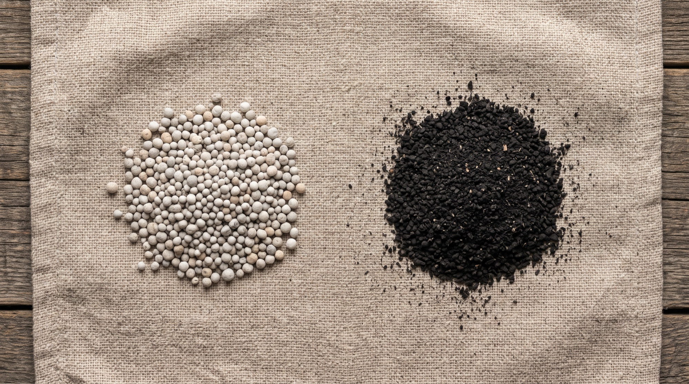

Pomimo tego, że preparaty zawierające substancje humusowe, zwłaszcza kwasy, są obecne na rynku od kilku dekad, wokół ich działania wciąż gromadzi się wiele krzywdzących mitów, nieporozumień i niedopowiedzeń. W efekcie kwasy humusowe bywają postrzegane albo jako cudowny środek rozwiązujący wszystkie problemy gleby i roślin, albo przeciwnie – jako „chrzczona woda” o niewielkiej wartości praktycznej. Tymczasem prawda, jak zwykle, leży pośrodku. Poniżej rozprawiamy się z trzema z tych mitów, opierając się na aktualnej wiedzy oraz naszej wieloletniej praktyce; kolejne teksty na ten temat znajdziesz w Strefie wiedzy.
Mit pierwszy: „Kwasy humusowe to nawóz i mogą być stosowane zamiast nawożenia mineralnego”
Przekonanie, że kwasy humusowe mogą całkowicie zastąpić nawozy mineralne, wynika z traktowania substancji humusowych jako nawozu organicznego. Mimo ogromnego wpływu na żyzność gleby produkty humusowe nie dostarczają azotu czy fosforu w ilościach pokrywających potrzeby pokarmowe roślin.
Co w takim razie robią substancje humusowe?
- Zwiększają retencję wody i pojemność sorpcyjną gleby.
- Ograniczają wymywanie składników odżywczych dzięki chelatowaniu makro- i mikroelementów.
- Poprawiają rozwój:
- systemu korzeniowego,
- tkanek zielonych.
Dzięki temu rośliny mogą skuteczniej pobierać wodę, składniki pokarmowe i lepiej prowadzić fotosyntezę, a efektywność stosowanego nawożenia znacząco wzrasta. Pozwala to ograniczyć dawki nawozów mineralnych o kilkanaście, a nawet do kilkudziesięciu procent bez spadku plonu – jednak skala tego efektu zależy od zasobności gleby, technologii uprawy i warunków pogodowych.

Mit drugi: „Kwasy humusowe można stosować tylko wiosną lub jesienią”
Wiosna i jesień to dwa najczęściej polecane terminy aplikacji kwasów i innych substancji humusowych, jednak błędem jest przekonanie, że tylko wtedy przynoszą one korzyści. Preparaty humusowe można stosować praktycznie przez cały czas, a produkty zawierające wyekstrahowane kwasy humusowe najlepiej użyć w okresie aktywnej wegetacji upraw, gdy gleba ma odpowiednią wilgotność i rośliny aktywnie rosną.
- Wiosna. Najlepsze efekty uzyskuje się, gdy temperatura gleby trwale przekroczy 8–10°C, ponieważ właśnie wtedy wyraźnie wzrasta aktywność mikroorganizmów glebowych.
- Lato. W okresach intensywnego wzrostu czy stresu wywołanego suszą lub wysoką temperaturą preparaty humusowe pomagają utrzymać aktywność systemu korzeniowego i poprawiają gospodarkę wodną gleby.
- Jesień. Po zbiorach wspomagają przetwarzanie resztek pożniwnych, poprawiają strukturę gleby oraz odbudowują aktywność biologiczną stanowiska.
Warto wiedzieć
W praktyce profesjonalnej często wykonuje się kilka aplikacji w ciągu sezonu, a w przypadku fertygacji – cyklicznie, co 10–14 dni, w niedużym stężeniu 0,5–1% przez cały okres wegetacyjny.
Osobnym tematem jest dolistne stosowanie wyekstrahowanych kwasów humusowych, które mają funkcję biostymulatorów procesów fizjologicznych. Odpowiednio przygotowane preparaty – w naszej gamie jest to Carbohumic Calbor i Carbohumic Maxi Plus – mogą być pobierane przez liście i wspierać metabolizm roślin, szczególnie w okresach intensywnego wzrostu lub stresu.
Mit trzeci: „Produkty zawierające kwasy humusowe nadmiernie zakwaszają lub odkwaszają wodę i glebę”
Ten mit wynika z jednej strony z nazwy substancji – bo przecież „kwasy humusowe” muszą być kwaśne – a z drugiej z faktycznego, niekiedy wręcz zasadowego odczynu stosowanego preparatu. Nazwa odnosi się do charakteru budowy cząsteczek i obecności grup kwasowych (głównie karboksylowych i fenolowych), a nie do odczynu gotowego produktu. Większość preparatów zawierających kwasy humusowe w wyniku kondycjonowania ma odczyn mniej lub bardziej zasadowy (np. pH Carbohumic wynosi 8–101).
Kwasy humusowe działają buforująco na odczyn gleby, a ich obecność w glebie stabilizuje odczyn, chroniąc przed drastycznymi zmianami oraz zasoleniem. Warty podkreślenia jest wynik badań mówiący, że Carbohumic filtrowany (187 mesh) stosowany w zalecanym stężeniu, tj. 1–3%, na pewno nie powoduje wzrostu pH wody ani gleby.
| Co sprawdzamy | Wartość | Co z tego wynika |
|---|---|---|
| pH preparatu Carbohumic | 8–10 | nie powoduje zakwaszania środowiska glebowego |
| Zalecane stężenie Carbohumic filtrowanego (187 mesh) | 1–3% | nie powoduje wzrostu pH wody ani gleby |
| Zmiana odczynu cieczy fertygacyjnej po dodaniu preparatu | dziesiąte części jednostki pH | neutralizuje ją pojemność buforowa podłoża |
| Źródła wody w rolnictwie o nadmiernej twardości i wysokim pH | ponad 75% | warto zbadać odczyn wody do fertygacji |
Nawet jeśli po dodaniu preparatu do zbiornika odczyn cieczy fertygacyjnej ulegnie niewielkiej zmianie, po zaaplikowaniu do gleby zostaje to natychmiast zneutralizowane pojemnością buforową samego podłoża. Kilkaset litrów roztworu nie jest w stanie zmienić odczynu kilku tysięcy ton gleby przypadających na hektar. O odczynie gleby decydują przede wszystkim jej właściwości chemiczne, skład mineralny oraz wieloletni bilans nawożenia i wapnowania.
Kilkaset litrów roztworu nie jest w stanie zmienić odczynu kilku tysięcy ton gleby przypadających na hektar.
Podsumowanie
Kwasy i pozostałe substancje humusowe nie są alternatywą nawozów, lecz narzędziem zwiększającym efektywność ich wykorzystania, dzięki czemu mogą kompensować część nawożenia, którego nie są w stanie całkowicie zastąpić. Znacznie łatwiej jest utrzymać wysoki poziom żyzności gleby niż odbudować go po wielu latach intensywnego użytkowania.
Przypisy
- Odczyn (pH) wersji filtrowanej – parametry na stronie Carbohumic doglebowy. ↩